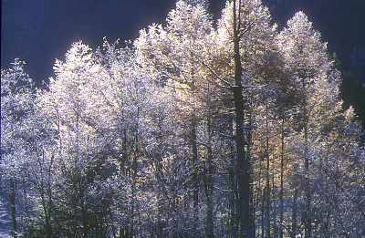
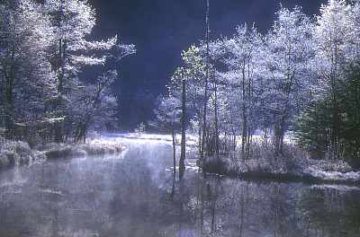
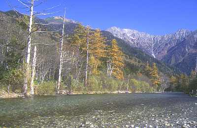

上高地 | ２００１．１０．２０ |
 朝の大正池 | ＜日程＞ 10/19 19：40 アミューズ豊田集合 21：30 キッカー宅集合 10/20 1：40 沢渡の茶嵐駐車場（上高地麓）で仮眠 6：00 起床 6：30 出発（タクシー２台） 7：00 大正池ホテル 9：00 河童橋 9：50 明神 10：50〜11：40 徳沢 12：35 明神池 13：35 河童橋 14：50〜15：20 タクシー乗車 15：30 茶嵐から帰途に （静岡市内の台湾家庭料理店で夕食） 21：40 静岡で解散 23：20 豊田町で解散 |
| 静岡〜沢渡は休憩込みで約４時間で到着。早い。(こいつの運転のせい→きっかー） 神（らくべー勝手に改め、カミと読む）さん車間距離空けすぎ（笑）：談キッカー 車とテントに分かれて仮眠（車で寝る時も銀マットが有ると暖っか＆快適）。朝4:40 駐車場管理のおやじが「コンコン」とドアを叩く。早朝に駐車代（お前の酒代にもならない）５００円徴収！！ ちょっと早すぎだよ。 朝起きると、一面は紅葉真っ盛り（紅葉最盛期は10/7頃らしい。でも、今の時期の方が空いているよ）。現地の気温は約０度で吐く息も白い。 大正池は、湖面からの朝もやが神秘的。湖畔で熱いカフェオーレ付きの（ほんと）ゴージャスな（うそ）朝食をとる。沼地付近の木々の霧氷にはめっちゃ感激やー。 |  樹木に付いた霜に朝日が差す |
|  朝の田代池 | 田代池・上高地温泉街を経由して河童橋へ。（べっしーはココで写真を撮るため別行動） 朝早いためか、さほど混んでいず、「これでも行楽地？」と思う。休憩場所の明神にて「みんなでこの先の徳沢まで行こう」って、ほぼ強引極まりない提案をキッカーがする。えーまだ先歩くの〜って顔のモッチーが恐いよ〜。 途中、穂高連峰（前穂高岳〜八峰）が見えると、クライマーのキッカー＆山家のらくべーが２人の世界に！ ここからが、ちょっとだけ起伏がある道らしい（私は平坦だと思ったが。談キッカー）が無難に通過、徳沢の芝生広場でみな昼寝。ここまで来ると人も少なくて、うれぴー。 明神まで戻る最中に、キッカーは（昨日膝傷めて、普通に歩く事出来なかったんだもん。談：キッカー）次第と遅れ始め、最後にはヨロヨロしながら歓喜のゴール！！ |
| 明神池は、拝観料取る割に（２５０円）は、人がゴミゴミしていて、ちょっと期待はずれだったらしい（俺（きっかー）は利口だから、唯一一人入らなかったぞ。と言いたいが、実は歩けなかっただけ。その代わり、一人寂しくグラノーラをボリボリ食ってた）。 シュガーは今日歩き過ぎて、途中から膝が痛くなって来たらしい（う〜、その原因は多分あれだが、報禁でここには書けん）。ビジターセンターでべっしーと合流。タクシーは待ち時間殆ど無しで乗れた（早出・早戻が利口だよ）。 帰りの運転でも、茶嵐〜松本が渋滞だったが、他はスムーズ。静岡で台湾料理食べて、解散。お疲れさまです。 |  梓川と穂高 |